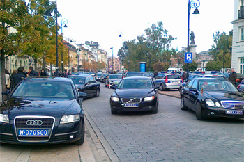

SZKOLENIA - KONSULTACJE - DORADZTWO - ORGANIZACJA IMPREZ
Szkolenia
Problematyka ka¿dorazowo uzgadniana z zainteresowanymi.Mo¿e obejmowaæ m.in. nastêpuj±ce zagadnienia:
DYPLOMACJA I PROTOKÓ£ DYPLOMATYCZNY
- Dyplomacja
- Korpus dyplomatyczny i konsularny w Polsce
- Protokó³ dyplomatyczny (zakres - zasady - funkcje)
- Precedencja, starszeñstwo, prawa i lewa strona
- Alternat
PROTOKÓ£ W UNII EUROPEJSKIEJ
- Symbole Unii Europejskiej
- Precedencja
- Instytucje Unijne
NAWI¡ZYWANIE KONTAKTÓW
- Tytu³y i tytu³owanie
- Bilety wizytowe
- Powitania, przedstawianie, prezentacja, u¶cisk d³oni
DYPLOMATA - GO¦Æ W URZÊDZIE
- Aran¿acja wizyty
- Przygotowanie i przebieg spotkania
- Recepcja
PRZYGOTOWANIE I PRZEBIEG WIZYT ZAGRANICZNYCH
- Znaczenie i rola wizyt
- Podzia³ i rodzaje wizyt oraz ich charakterystyka
- Przygotowanie wizyty
(merytoryczne, organizacyjno-protokolarne, medialne, logistyczne) - Etapy przygotowania wizyty
- Ksi±¿eczka - program organizacyjny wizyty
- Przebieg wizyty:
- powitanie i po¿egnanie
- rozmowa "w cztery oczy" lub "w w±skim gronie"
- rozmowy plenarne
- podpisanie dokumentów
- konferencja prasowa
- recepcje
- inne punkty programu
PRZYGOTOWANIE I PRZEBIEG PRZYJÊÆ
- Rola i cel przyjêæ
- Formu³y przyjêæ
- Dobór go¶ci
- Zaproszenia
- Przyjêcia zasiadane:
- menu
- wokó³ sto³u
- usadzanie go¶ci
- przebieg przyjêcia
- toast
- Przyjêcia na stoj±co:
- przygotowanie przyjêcia
- menu
- scenariusz
- przebieg przyjêcia
(jako organizator - jako uczestnik)
PRZYGOTOWANIE I PRZEBIEG KONFERENCJI PRASOWYCH
- Rola mediów
- Komunikacja spo³eczna
- Rzecznik prasowy
- Jak zorganizowaæ konferencje prasow±
- Referent
- Przebieg konferencji prasowej
WYDARZENIA W URZÊDZIE
- Przygotowanie zebrañ, narad, spotkañ i konferencji
- Wrêczanie odznaczeñ i wyró¿nieñ
- Nadanie aktów obywatelstwa
- Otwarcie - ods³oniêcie (urzêdu, firmy, elementu infrastruktury, wystawy, pomnika, tablicy, itp.)
RÓ¯NICE KULTUROWE
PROFESJONALNY WIZERUNEK
PROWADZENIE KORESPONDENCJI
Organizacja imprez
Organizacja i przygotowanie imprez firmowych, wizyt, konferencji i innych wydarzeñ specjalnych: (spotkania i wyjazdy integracyjne, spotkania z mediami, otwarcie konsulatów honorowych, wrêczanie nagród, imprez honoruj±cych wa¿ne osoby lub wydarzenia)
